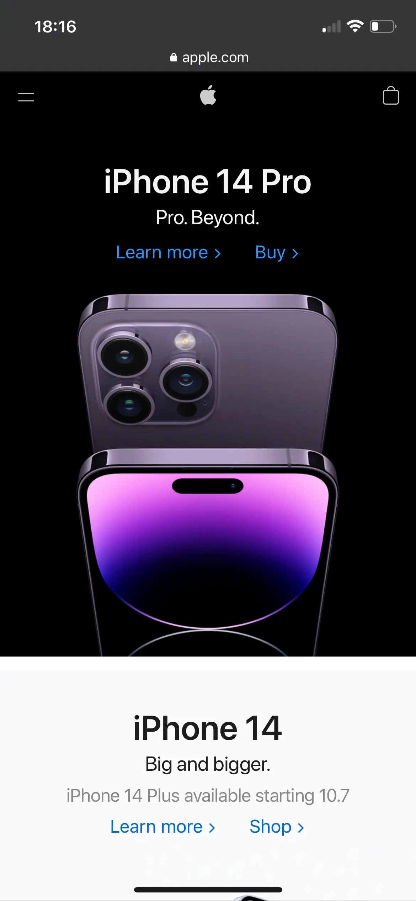

PC Part Picker
pcpartpicker.comthe reason i chose this website is because it's about how to build a PC and the first thing that it shows is "start your build" and the very next portion is a series of guides that are great to assist the user on how to build a PC and ensure that they have plenty of help in the process. the other part of the site that i like is the nav bar at the top that is present throughout. this allows the user to make sure that they don't get lost on the page when it comes to navigation.
The Church of Jesus Christ of Latter-Day Saints
Church of Jesus Christthe great thing about the church website here is that it shows the importance of having consistant white space while making the design clean and the items centered and easy to read by the user
Apple Inc.
Apple Inc. Notice here that appl's website has both dark and light backgrounds with images but the text is still easily readable. this site shows great useage with contrast between text and the background and images.